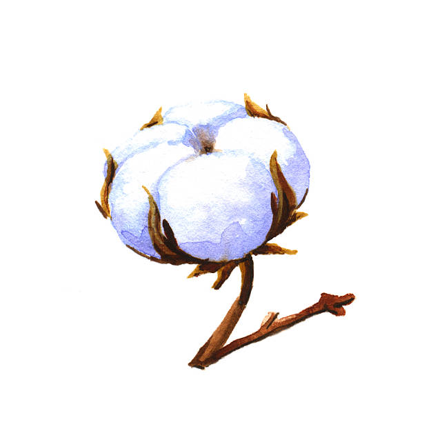

Влакната на памука се извличат от семенната кутийка на растението. Полученото влакно намира широко приложение в производството на плат. Сведения за памучен плат има от преди повече от 7000 години.
Влакно от лен от своя страна се извлича от стъблото. Отделните влакна са слепени с пектин. За разрушаването му се използва нагряване. После се прилагат различни техники. Накрая влакната се сресват. Важно е да се отбележи, че влакнодайния и маслодайния лен са различни.
От стъблото на конопа се извлича грубо влакно. Това става като стъблото се накисне в течаща вода за продължително време. Този процес може да отнеме до 3 години. Полученото влакно е изключително издръжливо на солена вода, но е доста грубо и не се използва за дрехи масово.
Източници на информация:
wikipedia.org/cotton
wikipedia.org/lein
konop.bg
testextextile.com